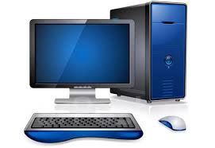

Тут розміщуємо останні новини про світ комп'ютерів та технологій.
Найпотужніший пк на 2024 рік це Fugaku. Суперкомп'ютер Fugaku в даний час є найпотужнішим комп'ютером у світі. Процесор Fugaku, розроблений Fujitsu і Riken, має швидкість обробки даних в 415,5 петафлопс, що еквівалентно 415,5 квадрильйона операцій, що проводяться всього за 1 секунду. Ця неймовірна швидкість досягається за рахунок 152064 спеціально розроблених процесорів A64FX, з обчислювальною потужністю по 2,7 терафлопс - кожен. Fugaku на даний момент застосовується для виконання безлічі дослідницьких завдань, включаючи пошук ліків, прогнозування погоди, моделювання біологічних процесів в організмі та навіть імітацію роботи людського мозку.
Розділ з цікавими статтями про комп'ютери, програмне забезпечення та інші теми.
Огляди нових комп'ютерів, ноутбуків, комплектуючих та іншої техніки.
